###################
##### Dataframe
###################
#upload and download
from downloadfromFileIO import saveFromFileIO
""" à executer sur datacamp: (apres copie du code uploadfromdatacamp.py)
uploadToFileIO(homelessness)
"""
tobedownloaded="""
{pandas.core.frame.DataFrame: {'homelessness.csv': 'https://file.io/vTM1t2ehXds4'}}
"""
prefixToc='1.1'
prefix = saveFromFileIO(tobedownloaded, prefixToc=prefixToc, proxy="")
#initialisation
import pandas as pd
homelessness = pd.read_csv(prefix+'homelessness.csv',index_col=0)Datacamp
I started learning with Datacamp in March 2019. This is a great resource and I recommend all datascience newcomers to give it a shot.
What I like are the consistent courses content. There is an overall logic between all courses. And content is just incredible: more than 300 interactive courses. OK maybe you won’t find all of them super useful but at least you can pick what is of interest for you. Following my learning process it takes me about 8 hours to complete a course.

Career tracks are a smart way to help you build a 1st tour in your datascience journey. I followed python programmer (old version), data scientist with python (old version) and machine learning scientist with python tracks. Mileage may vary but it is about 20 courses per track. Updated versions of tracks are now online and this is a mix between courses, projects and skills assessments. I have tested one project but it is a little bit too basic for me.
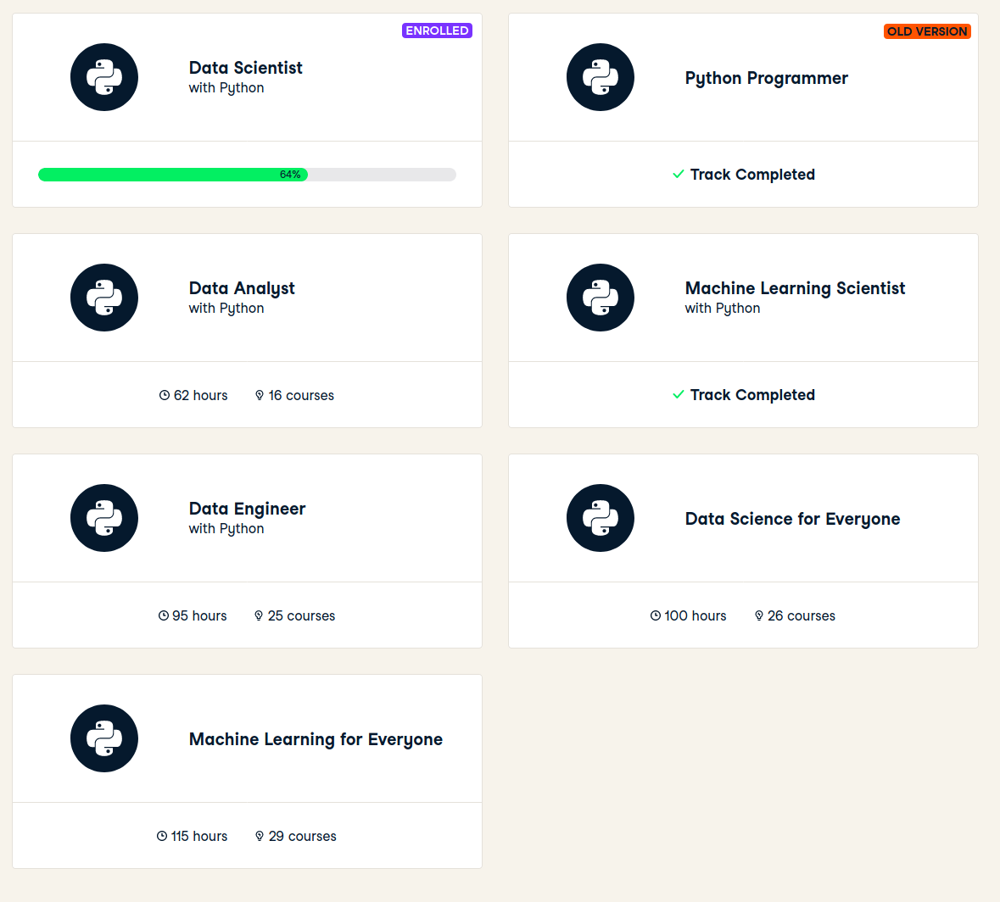
There is a nice and smooth progress tracking system, and as in a game you earn XP for each achivement.
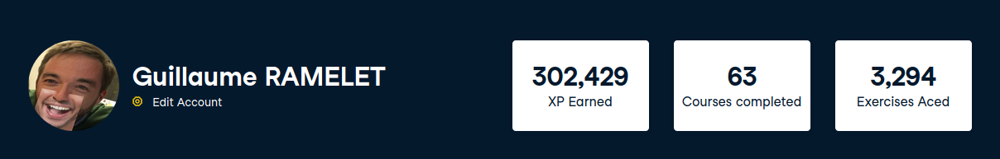
Selecting courses
A natural way to select courses is to browse through courses from career tracks. And I will complete courses from new version of career tracks. Or when I need to learn on a new domain, I just search for relevant courses (search engine is very good).
I have 2 ways to track these courses: * bookmarks in Datacamp 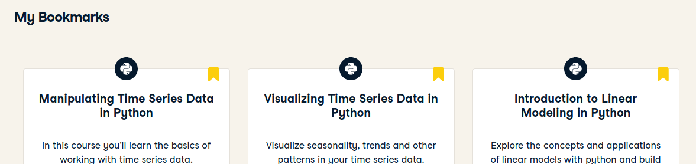
- entries in ITP (individual training plan, a big excel list of learning items I plan to follow) 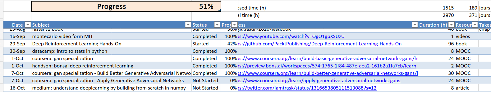
Learning process
Starting a project
As an example I will use
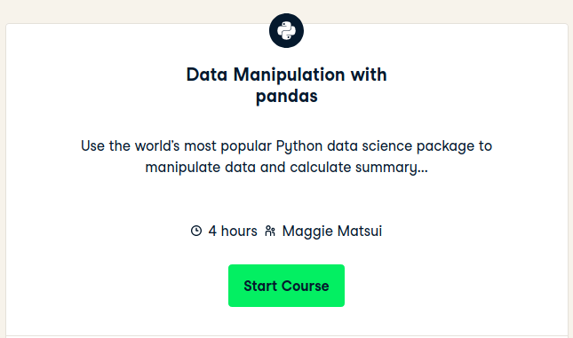
which is a project from the new Data Scientist career track and which is in my ITP:
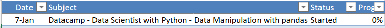
Git repo - data-scientist-skills
In my data-scientist-skills github repo, I have 2 folders: * Other datacamp courses - where I keep lectures (pdf slides) from datacamp courses * python-sandbox - where I keep notebooks and data from datacamp exercises
- creation of
Data Manipulation with pandasfolder underOther datacamp courses - creation of
data-manipulation-with-pandasfolder underpython-sandbox - copy of
python-sandbox/_1project-template/intopython-sandbox/data-manipulation-with-pandas
Datacamp project template
In this project template, 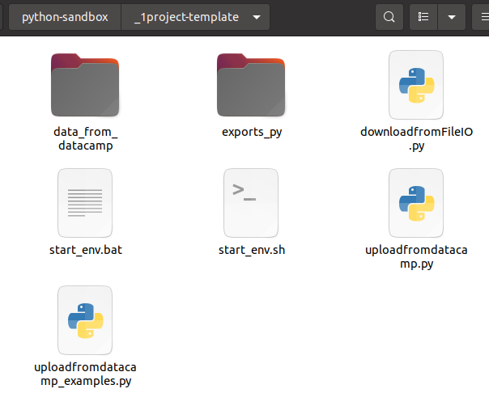
data_from_datacampwill store all data needed to launch datacamp exercisesexports_pywill contain exports of notebooks in txt/py format (usefull to search on code patterns)start_env.shstart_env.batto launch jupyter notebook from the right conda envdownloadfromFileIO.pyto download data files from my local notebooks (using in the background file.io)uploadfromdatacamp.pyto upload data files from datacampuploadfromdatacamp_examples.pysome examples to transfer dataframes, dataseries, lists, …
Projects structure
After initialisation, I have the following structure and content:
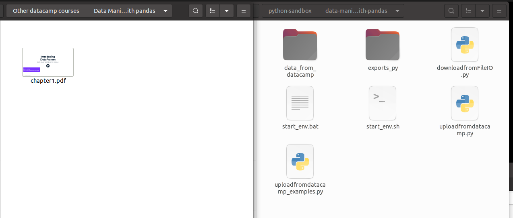
On your left lectures (one per chapter) and final certificate.
On your right notebooks.
Notebooks for exercises
Just run the jupyter notebook environment by calling start_env.sh.
Get the chapter title:
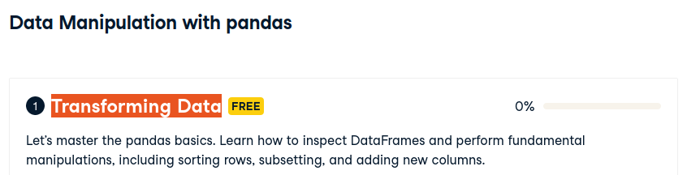
And name the notebook accordingly:
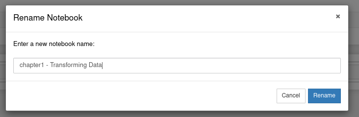
Then enter interactive instructions. I copy paste instructions using copy selection as markdown firefox add-on.
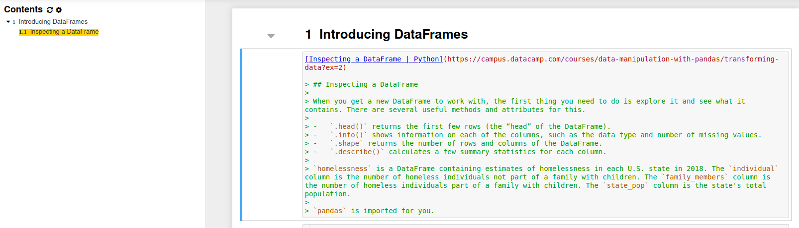
Here in this example, if I want to follow instructions locally I need to have homelessness dataframe.
I can use the following code from uploadfromdatacamp_examples.py
Before executing this cell, I have to copy/paste/execute uploadfromdatacamp.py content on datacamp server. And call
uploadToFileIO(homelessness)Then get the results last line
In [2]:
uploadToFileIO(homelessness)
{"success":true,"key":"vTM1t2ehXds4","link":"https://file.io/vTM1t2ehXds4","expiry":"14 days"}
{pandas.core.frame.DataFrame: {'homelessness.csv': 'https://file.io/vTM1t2ehXds4'}}and copy it in tobedownloaded variable.
Update prefixTOC to the good value (exercise 1.1 is the 1st one in first chapter) which is used as a prefix in data files. And update local variable name and csv file.
Run the cell
Here is the result
Téléchargements à lancer
{'pandas.core.frame.DataFrame': {'homelessness.csv': 'https://file.io/vTM1t2ehXds4'}}
% Total % Received % Xferd Average Speed Time Time Time Current
Dload Upload Total Spent Left Speed
100 2528 0 2528 0 0 4870 0 --:--:-- --:--:-- --:--:-- 4870And homelessness is available to be used.
Files downloaded are in data_from_datacamp folder.
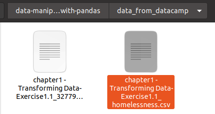
And running again the cell won’t download file from file.io, but will read the cached file. (delete file to force download)
Full content of this notebook example at the bottom
keep content in git
~/git/guillaume/data-scientist-skills$ git add .
~/git/guillaume/data-scientist-skills$ git commit -m 'start of data manipulation in pandas course'
[master c8696ce] start of data manipulation in pandas course
45 files changed, 9010 insertions(+)
create mode 100644 Other datacamp courses/Data Manipulation with pandas/chapter1.pdf
create mode 100644 python-sandbox/data-manipulation-with-pandas/.ipynb_checkpoints/chapter1 - Transforming Data-checkpoint.ipynb
create mode 100644 python-sandbox/data-manipulation-with-pandas/__pycache__/downloadfromFileIO.cpython-37.pyc
create mode 100644 python-sandbox/data-manipulation-with-pandas/chapter1 - Transforming Data.ipynb
create mode 100644 python-sandbox/data-manipulation-with-pandas/data_from_datacamp/.empty_dir.txt
create mode 100644 python-sandbox/data-manipulation-with-pandas/data_from_datacamp/chapter1 - Transforming Data-Exercise1.1_3277903540843719836.lock
create mode 100644 python-sandbox/data-manipulation-with-pandas/data_from_datacamp/chapter1 - Transforming Data-Exercise1.1_homelessness.csv
create mode 100644 python-sandbox/data-manipulation-with-pandas/downloadfromFileIO.py
create mode 100644 python-sandbox/data-manipulation-with-pandas/exports_py/.empty_dir.txt
create mode 100644 python-sandbox/data-manipulation-with-pandas/exports_py/Untitled.py
create mode 100644 python-sandbox/data-manipulation-with-pandas/exports_py/Untitled.txt
create mode 100644 python-sandbox/data-manipulation-with-pandas/exports_py/chapter1 - Transforming Data.py
create mode 100644 python-sandbox/data-manipulation-with-pandas/start_env.bat
create mode 100755 python-sandbox/data-manipulation-with-pandas/start_env.sh
create mode 100644 python-sandbox/data-manipulation-with-pandas/uploadfromdatacamp.py
create mode 100644 python-sandbox/data-manipulation-with-pandas/uploadfromdatacamp_examples.py
~/git/guillaume/data-scientist-skills$ git push
Enumerating objects: 43, done.
Counting objects: 100% (43/43), done.
Delta compression using up to 12 threads
Compressing objects: 100% (38/38), done.
Writing objects: 100% (40/40), 5.75 MiB | 3.85 MiB/s, done.
Total 40 (delta 8), reused 1 (delta 0)
remote: Resolving deltas: 100% (8/8), completed with 3 local objects.
To github.com:castorfou/data-scientist-skills.git
89f60e5..c8696ce master -> masterUpdate progress in ITP
Datacamp is giving instant progress
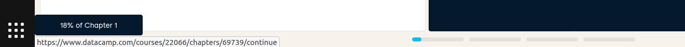
So I regularly report this progress (here 0.18/4=5%) in ITP.
keep certificates
I download and keep certificates with lectures.
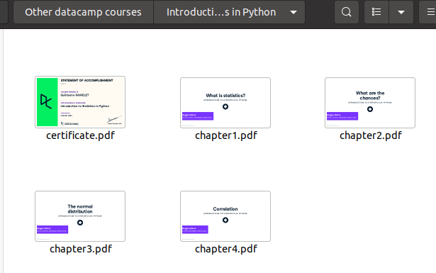
Notebook example : Introducing DataFrames
Inspecting a DataFrame | Python
Inspecting a DataFrame
When you get a new DataFrame to work with, the first thing you need to do is explore it and see what it contains. There are several useful methods and attributes for this.
.head()returns the first few rows (the “head” of the DataFrame)..info()shows information on each of the columns, such as the data type and number of missing values..shapereturns the number of rows and columns of the DataFrame..describe()calculates a few summary statistics for each column.
homelessnessis a DataFrame containing estimates of homelessness in each U.S. state in 2018. Theindividualcolumn is the number of homeless individuals not part of a family with children. Thefamily_memberscolumn is the number of homeless individuals part of a family with children. Thestate_popcolumn is the state’s total population.
pandasis imported for you.
init
###################
##### Dataframe
###################
#upload and download
from downloadfromFileIO import saveFromFileIO
""" à executer sur datacamp: (apres copie du code uploadfromdatacamp.py)
uploadToFileIO(homelessness)
"""
tobedownloaded="""
{pandas.core.frame.DataFrame: {'homelessness.csv': 'https://file.io/vTM1t2ehXds4'}}
"""
prefixToc='1.1'
prefix = saveFromFileIO(tobedownloaded, prefixToc=prefixToc, proxy="")
#initialisation
import pandas as pd
homelessness = pd.read_csv(prefix+'homelessness.csv',index_col=0)Téléchargements à lancer
{'pandas.core.frame.DataFrame': {'homelessness.csv': 'https://file.io/vTM1t2ehXds4'}}
% Total % Received % Xferd Average Speed Time Time Time Current
Dload Upload Total Spent Left Speed
100 2528 0 2528 0 0 4870 0 --:--:-- --:--:-- --:--:-- 4870
code
Print the head of the
homelessnessDataFrame.
# Print the head of the homelessness data
print(homelessness.head()) region state individuals family_members state_pop
0 East South Central Alabama 2570.0 864.0 4887681
1 Pacific Alaska 1434.0 582.0 735139
2 Mountain Arizona 7259.0 2606.0 7158024
3 West South Central Arkansas 2280.0 432.0 3009733
4 Pacific California 109008.0 20964.0 39461588Print information about the column types and missing values in
homelessness.
# Print information about homelessness
print(homelessness.info())<class 'pandas.core.frame.DataFrame'>
Int64Index: 51 entries, 0 to 50
Data columns (total 5 columns):
# Column Non-Null Count Dtype
--- ------ -------------- -----
0 region 51 non-null object
1 state 51 non-null object
2 individuals 51 non-null float64
3 family_members 51 non-null float64
4 state_pop 51 non-null int64
dtypes: float64(2), int64(1), object(2)
memory usage: 2.4+ KB
NonePrint the number of rows and columns in
homelessness.
# Print the shape of homelessness
print(homelessness.shape)(51, 5)Print some summary statistics that describe the
homelessnessDataFrame.
# Print a description of homelessness
print(homelessness.describe()) individuals family_members state_pop
count 51.000000 51.000000 5.100000e+01
mean 7225.784314 3504.882353 6.405637e+06
std 15991.025083 7805.411811 7.327258e+06
min 434.000000 75.000000 5.776010e+05
25% 1446.500000 592.000000 1.777414e+06
50% 3082.000000 1482.000000 4.461153e+06
75% 6781.500000 3196.000000 7.340946e+06
max 109008.000000 52070.000000 3.946159e+07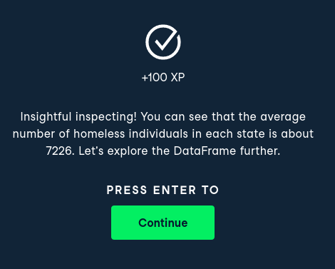